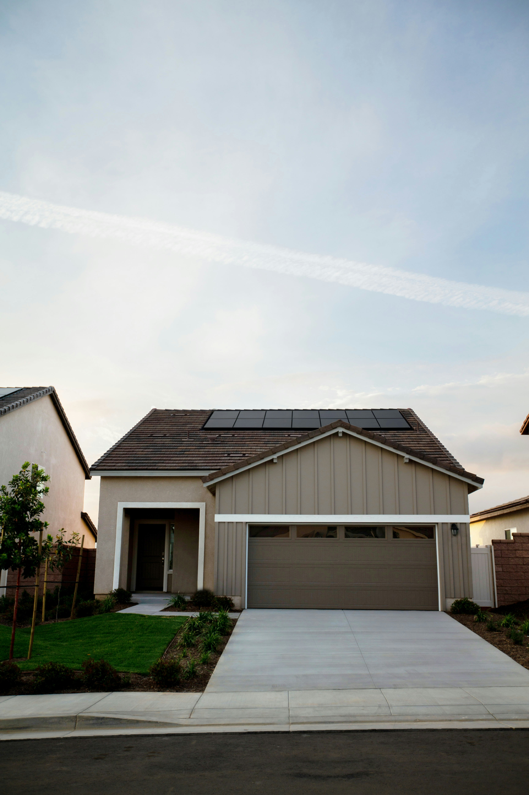
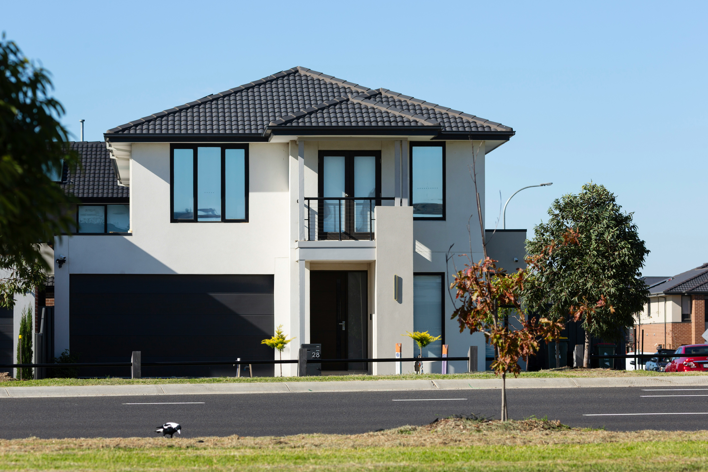

Garage conversions
Create a warm office, playroom or utility from space that has become general storage.
Garage conversions
Local builders in Kingswinford
Extensions, conversions, RSJs and renovations across Kingswinford and Wall Heath.
Local homes
Kingswinford has older brick homes and many later semis with attached garages. We compare extensions, conversions and internal changes.

Common local jobs
A large addition is not always the first answer. We look at how existing garages, separate rooms and the rear garden connection could work harder.
Create a warm office, playroom or utility from space that has become general storage.
Garage conversionsAdd family space and make the route from kitchen to garden feel natural.
House extensionsFinish the route outside new doors with safe steps, suitable falls and solid paving.
Patios & groundworks
Look at the whole frontage
When a garage door is replaced, brick bond, window proportions, sill height and the relationship to the original house all matter. Internally, floor level and insulation decide whether the room feels properly connected.
For extensions, side boundaries and the roof form deserve the same care—especially around older parts of the village or where neighbouring houses sit close.
Need a builder in Kingswinford?